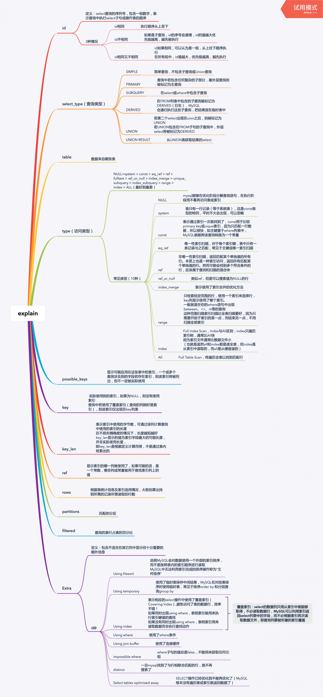

explain关键字可以模拟MySQL优化器执行SQL语句，可以很好的分析SQL语句或表结构的性能瓶颈.
explain的用途
- 表的读取顺序如何
- 数据读取操作有哪些操作类型
- 哪些索引可以使用
- 哪些索引被实际使用
- 表之间是如何引用
- 每张表有多少行被优化器查询
- ……
explain的主要字段有
- id select查询的序列号，包含一组数字，表示查询中执行select子句或操作表的顺序
- select_type 查询类型
- table 正在访问哪个表
- partitions 匹配的分区
- type 访问的类型
- possible_keys 显示可能应用在这张表中的索引，一个或多个，但不一定实际使用到
- key 实际使用到的索引，如果为NULL，则没有使用索引
- key_len 表示索引中使用的字节数，可通过该列计算查询中使用的索引的长度
- ref 显示索引的哪一列被使用了，如果可能的话，是一个常数，哪些列或常量被用于查找索引列上的值
- rows 根据表统计信息及索引选用情况，大致估算出找到所需的记录所需读取的行数
- filtered 查询的表行占表的百分比
- Extra 包含不适合在其它列中显示但十分重要的额外信息
最后

……